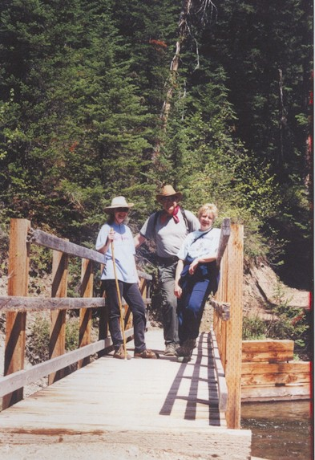

BHS 1967 Class Member
Steven Mueller
Click to Email
Click to Email
 1967 Click for Trinity Lutheran Elementary Photo |
 2007 - My wife, Sharon and I are wearing hats; and the blonde lady is a very good friend, Jill |
| 1967 Click for Trinity Lutheran Elementary Photo |
 2007 - My wife, Sharon and I are wearing hats; and the blonde lady is a very good friend, Jill |
After High School, spent 8 years serving in the U.S.Air Force, including a year in VietNam.
Returned to Iowa State University for my degree in Biology. Moved to Montana, where we have remained from 1979 to present. Work as a manager for the Department of Defense, in the Minuteman Intercontinental Ballistic Missile nuclear weapons system. Married Sharon Finnegan (a Story City farm girl) in 1970. We have two grown sons, both six-and-a-half-footers. We have remained happily married for 37 years and counting.
We both greatly enjoy involvement in music. We play in the local
University Band and the Community Band, and both sing in the Great
Falls Symphony's Symphonic Choir. We also like bicycling in the
beautiful intermountain West, and hiking in the wilderness areas
available here.